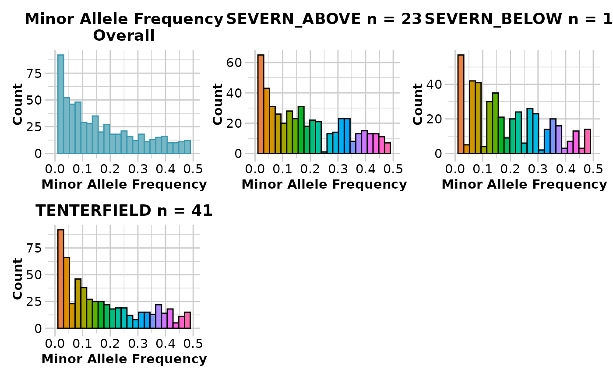

gl.report.maf.RdThis script provides summary histograms of MAF for each
population in the dataset and an overall histogram to assist the decision of
choosing thresholds for the filter function gl.filter.maf
gl.report.maf(
x,
maf.limit = 0.5,
ind.limit = 5,
plot.out = TRUE,
plot_theme = theme_dartR(),
plot_colors_pop = discrete_palette,
plot_colors_all = two_colors,
bins = 25,
save2tmp = FALSE,
verbose = NULL
)Name of the genlight object containing the SNP data [required].
Show histograms MAF range <= maf.limit [default 0.5].
Show histograms only for populations of size greater than ind.limit [default 5].
Specify if plot is to be produced [default TRUE].
Theme for the plot. See Details for options [default theme_dartR()].
A color palette for population plots [default discrete_palette].
List of two color names for the borders and fill of the overall plot [default two_colors].
Number of bins to display in histograms [default 25].
If TRUE, saves any ggplots and listings to the session temporary directory (tempdir) [default FALSE].
Verbosity: 0, silent or fatal errors; 1, begin and end; 2, progress log ; 3, progress and results summary; 5, full report [default NULL, unless specified using gl.set.verbosity].
An unaltered genlight object
The function gl.filter.maf will filter out the
loci with MAF below a specified threshold.
Function's output
The minimum, maximum, mean and a tabulation of MAF quantiles against thresholds rate are provided. Output also includes a boxplot and a histogram.
This function reports the MAF for each of several quantiles. Quantiles are partitions of a finite set of values into q subsets of (nearly) equal sizes. In this function q = 20. Quantiles are useful measures because they are less susceptible to long-tailed distributions and outliers.
Plots and table are saved to the temporal directory (tempdir) and can be
accessed with the function gl.print.reports and listed with
the function gl.list.reports. Note that they can be accessed
only in the current R session because tempdir is cleared each time that the
R session is closed.
Examples of other themes that can be used can be consulted in
gl.filter.maf, gl.list.reports,
gl.print.reports
Other report functions:
gl.report.bases(),
gl.report.callrate(),
gl.report.diversity(),
gl.report.hamming(),
gl.report.heterozygosity(),
gl.report.hwe(),
gl.report.ld.map(),
gl.report.locmetric(),
gl.report.monomorphs(),
gl.report.overshoot(),
gl.report.parent.offspring(),
gl.report.pa(),
gl.report.rdepth(),
gl.report.reproducibility(),
gl.report.secondaries(),
gl.report.sexlinked(),
gl.report.taglength()
gl <- gl.report.maf(testset.gl)
#> Starting gl.report.maf
#> Processing genlight object with SNP data
#> Starting gl.report.maf
#>
#> Reporting Minor Allele Frequency (MAF) by Locus
#> No. of loci = 255
#> No. of individuals = 250
#> Minimum : 0.002
#> 1st quantile : 0.004
#> Median : 0.016
#> Mean : 0.04948711
#> 3r quantile : 0.03747878
#> Maximum : 0.4895833
#> Missing Rate Overall: 0.12
#>

#> Quantile Threshold Retained Percent Filtered Percent
#> 1 100% 0.489583333 1 0.9 110 99.1
#> 2 95% 0.243902439 6 5.4 105 94.6
#> 3 90% 0.131250000 12 10.8 99 89.2
#> 4 85% 0.092592593 17 15.3 94 84.7
#> 5 80% 0.046184739 23 20.7 88 79.3
#> 6 75% 0.039473684 28 25.2 83 74.8
#> 7 70% 0.026000000 34 30.6 77 69.4
#> 8 65% 0.022267206 39 35.1 72 64.9
#> 9 60% 0.020833333 46 41.4 65 58.6
#> 10 55% 0.018442623 50 45.0 61 55.0
#> 11 50% 0.016000000 56 50.5 55 49.5
#> 12 45% 0.010729614 62 55.9 49 44.1
#> 13 40% 0.008888889 67 60.4 44 39.6
#> 14 35% 0.006122449 73 65.8 38 34.2
#> 15 30% 0.004166667 78 70.3 33 29.7
#> 16 25% 0.004000000 84 75.7 27 24.3
#> 17 20% 0.002118644 89 80.2 22 19.8
#> 18 15% 0.002016129 95 85.6 16 14.4
#> 19 10% 0.002000000 100 90.1 11 9.9
#> 20 5% 0.002000000 111 100.0 0 0.0
#> 21 0% 0.002000000 111 100.0 0 0.0
#> Completed: gl.report.maf
#>